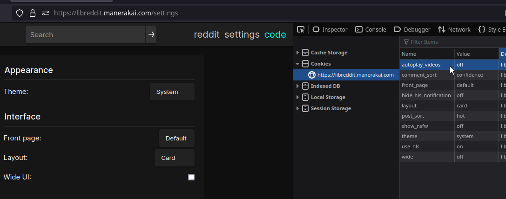
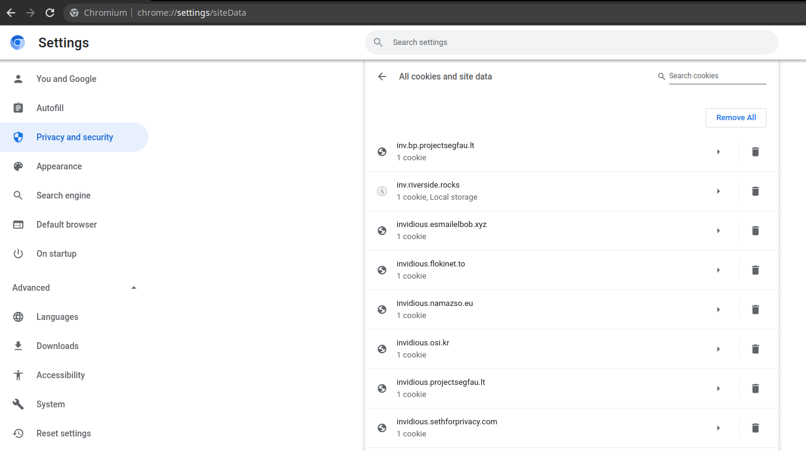

LibRedirect
Keyboard Shortcuts
Libredirect offers the following Keyboard shortcuts for easier access
Shift+Alt+L - To Switch the instance you are currently inShift+Alt+C - Copies the original link. Ex: Copies the original Twitter link when you are in Nitter websiteShift+Alt+U - Shortcut to initiate Unify Settings. In other words, Copies the preferences (cookies, localStorage) from the current opened instance and copy them to all the other selected instancesWorking of Unify Settings
Usually they're stored using cookies. We just copy those cookies to the other instances. Btw we don't copy critical cookies that have tokens or credential data. We copy only the cookies for customization such as theme, language, preffered layout, etc...
Some frontends use localStorage instead of cookies such as Piped. We copy it too but with a different approach, though you the user will have the same result.

The Data is stored forever within Libredirect and also gets exported when you use the Export Function to backup your settings.